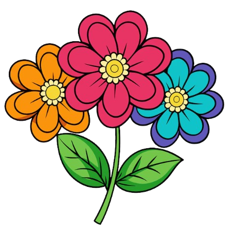

Ayuntamiento de Valencia - Seguridad y Servicios Ciudadanos
🚨 No Estás Sola
Tipo de emergencia

Pelea
Violación
Acosador
¡SOS! Envíame ayuda
Fin del problema
Información oficial y apoyo del Ayuntamiento de Valencia para la seguridad ciudadana.
⚙️ Preferencias
SOS Público
×